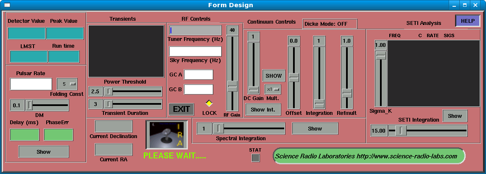

IRA Control Panel
The IRA Control Panel controls all aspects of the IRA Radio Astronomy and SETI receiver system, once the receiver subsystem has been initialized with the IRA Starter window.

Control Panel Areas
The Detector/LMST area
This area shows various values of overall interest to the observer:
LMST
The Local Mean Sidereal Time which is the local time-of-day in sidereal time. A sidereal day is shorter than a regular day by approximately 4 minutes, which means that the LMST “drifts” relative to the local time.
Runtime
The amount of time the application has been running
Detector Value
The current continuum detector output value, after DC gain and Offset have been applied.
Peak Value
The current peak value from the continuum detector, after DC gain and Offset have been applied.
This value is reset whenever the RF gain, DC gain, or Offset are changed
The Pulsar Area
The Pulsar area controls various aspects of the pulsar display system:
Pulsar rate
This input area sets the pulsar observing rate, in Hz. You should use a value that is listed in the Parkes/ATNF pulsar data. Press ENTER in order for the pulsar rate data that you entered to take effect.
Folding Const
This choice control sets the folding constant used in the synchronous detection algorithm. The choices are:
5, 10, 15, 20, 25, 30
DM
This slider control determines the Dispersion Measure of the observation. It currently doesn't do anything, but in future will allow for coherent de-dispersion. At L-band frequencies and above, over the modest observing bandwidths contemplated by this application, the total time delay due to dispersion is very small, and thus not worth the CPU load of compensating for it.
Delay(ms)
This shows the computed across-the-band dispersion delay based on the given Dispersion Measure.
PhaseErr
This shows the residual phase/frequency error, based on the configured pulsar sample rate, and the pulsar rate given as input.
Show
This control causes the Pulsar Pulses window to be displayed.
The Transients Area
This area shows any recently-detected transients in the detector output. The output shows GMT, transient width, and the peak and average strengths of the transient.
Power Threshold
Slider control sets the relative power threshold used to trigger a Transient detection
Transient Duration
Slider control sets the duration (in 0.01s increments) used to trigger a Transient detection
Both the Transient Duration and Power Threshold conditions must be met in order for a transient to be displayed and logged. Note that in split mode, a transient is only triggered if the transient appears only in the primary beam (A channel) and not the secondary beam (B channel), subject to the usual duration and power threshold constraints.
Current Declination
This area is used to input the current observation declination. If the RCVR_DEC_MODE environment variable is set to external <filename>, then this area is updated automatically from external telescope tracking software. When entering data here, remember to press ENTER to have the entered declination take effect.
Current RA
This area shows the current right ascension of the observation. If the RCVR_RA_MODE environment variable is set to transit, then this area is updated automatically to the current LMST. This assumes a meridian-transit instrument, aligned on the local meridian. When entering data here, remember to press ENTER to have the entered right ascension take effect.
If the RCVR_RA_MODE environment variable is set to external <filename>, then this area is updated automatically from external telescope tracking software.
The RF Controls Area
Tuner Frequency
This input area sets the tuning frequency of the Gnu Radio software/hardware subsystem. The units used in this area are Hz. If the desired tuner frequency is 10.7MHz, then you must enter: 10700000 or 10.7e6 into this area. You must press ENTER for the frequency you entered to take effect.
Sky Frequency
This is the same as the RF Tuner frequency, unless the Lock control is disabled
LOCK
When activated (the default), the Sky frequency is the same as the RF Tuner frequency. For situations where a down-converter is used, you may disable the LOCK control, and enter a Sky Frequency. Once set, the Sky Frequency will track the RF Tuner Frequency.
EXIT
This button causes IRA to exit
RF Gain
This input area sets the RF gain of the Gnu Radio RF software/hardware.
GC A
This input area allows you to enter a gain compensation coefficient for the A channel
GC B
This input area allows you to enter a gain compensation coefficient for the B channel
Gain compensation allows you to bring both the 'A' and 'B' channels into relative balance. It is nearly always the case that there will be a small amount of gain imbalance, even in a carefully-design RF signal chain. For split, dual, and interferometer modes, it is very helpful for there to be gain balance between the two channels.
The Continuum Controls Area
DC Gain
This control sets the post-detector “DC” gain for continuum observing. Note that this doesn't affect any hardware, and is a software-only feature in SDR-based radios. Changing this control resets the Detector Peak Value field.
Mult.
This control sets a fixed multiplier for the DC Gain control. The default is x1, but x5, x10, x15, x20, and x25 are also available as choices. Changing this field resets the Detector Peak Value field.
Offset
This control sets the post-detector “DC” offset for continuum observing. Note that this doesn't affect any hardware, and is a software-only feature in SDR-based radios. Changing this control resets the Detector Peak Value field.
Integration
This slide control sets the integration time, in seconds, for continuum observations.
Refmult
This control sets the value of the reference multiplier, when observing in Dicke-switched mode. It is used generally to cause the reference input to be the same as the cold sky input when making observations. An external program is required to enable Dicke-switched mode.
Show
This causes the Continuum stripchart window to be displayed.
The SETI Analysis Area
This area is used to display and control SETI processing, and display any results (“hits”) that have recently occured.
The SETI browser area
This browser area show recent hits, with:
Frequency, count, chirp rate, and sigma values for this hit
Sigma_K
This slider control sets the value of 'K' used in determining the threshold for declaring a given FFT bin a “hit”. The lower this value, the more likely that false hits will occur.
SETI Integration
This sets the integration time, in seconds used in SETI processing. If the telescope is used in tracking mode, the values for this parameter can be set quite high, which will improve sensitivity. For telescope observing schemes in which objects “drift” through the beam, the, integration time should be set to no higher than ½ the beam transit time.
Show
This causes the SETI Waterfall window to be displayed.
The Spectral Analysis Area
This area controls the operation of the “conventional” spectral display, such as might be used on a conventional laboratory spectral analyser. There are two controls:
Spectral Integration
This control sets the integration time, in seconds, of the spectral display. Setting a high value improves the sensitivity for fixed-frequency signals, but can “smear” signals that are drifting from bin-to-bin.
Show
This causes the conventional spectral display window to be shown.
The IRA Button
This button causes some general information about IRA to be displayed, including license and version information.
The $HOME/astro_data directory
While the IRA application is running, it produces several data files, logging each of the important data items:
Total Power/Continuum
Files with names: tp-YYYYMMDDHH.dat
Short records: HH:MM:SS detector-value
Current LMST plus the current detector value as a floating point number
Long records: HH:MM:SS detector-value Header-info
Header-info is produced every 10 seconds
Dn=Declination,Ra=Right-Ascension,Ti=integration-time,Fc=RF-center-frequency,Bw=RF-bandwidth,Ga=RF-gain
If a secondary beam is in use (“split” mode), then there will also be files of the form: tp2-YYYYMMDDHH.dat with an identical format to the primary-beam total-power files.
Spectral
Files with names: spec-YYYYMMDDHH.dat
Records: data:HH:MM:SS Header-info [ 6000 floating-point values spread across multiple lines ]
Produced every 15 seconds
Spectral size is fixed at 6000 bins
SETI
Files with names: seti-YYYYMMDDHH.dat
Records: HH:MM:SS declination right-ascension center-frequency count chirp-rate sigma(s)
Transients
File with names: trns-YYYYMMDDHH.dat
Records: HH:MM:SS declination right-ascension center-frequency bandwidth HH:MM:SS width strength [ profile ] + { profile }
HH:MM:SS on the end of the record is GMT time.
The width parameter is the width of the pulse in samples at 100Hz sampling
The strength parameter gives the relative strength of the transient, compared to the surround averaged data.
The primary transient profile is logged between '[' and ']' and is a list of floating-point numbers.
Lines are split every 8 values
If a secondary beam is in use (“split” mode), then the profile of the secondary beam detection, over the same time period, will appear after a '+' between braces '{' and '}'
Pulsar
File with names: psr-YYYYMMDDHH.dat
Records: HH:MM:SS declination right-ascension center-frequency bandwidth pulsar-rate pulsar-sample-rate [ pulse profile ]
pulsar-rate is the pulse rate, in Hz of the observed pulsar
pulsar-sample-rate is the sampling rate in use at the time of the observation, in Hz
The pulse profile is given between '[' and ']' symbols, similar to the Transient profile
Lines are split every 8 values
General Information about IRA and observing considerations